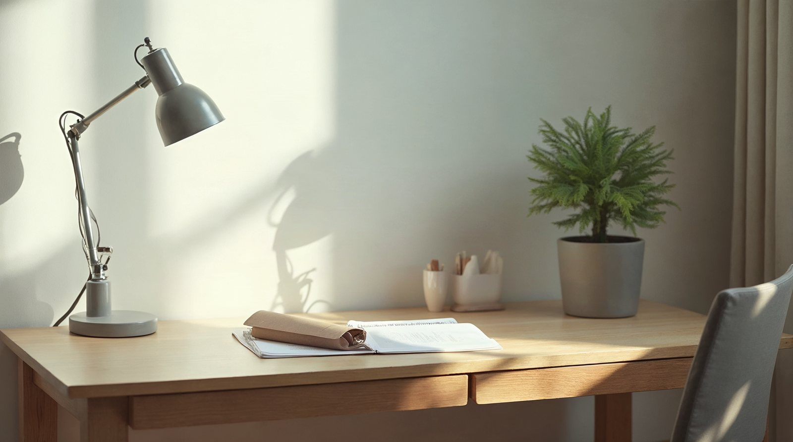
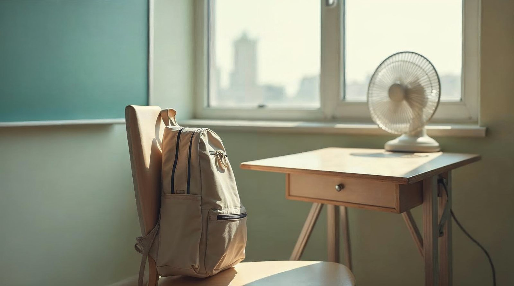
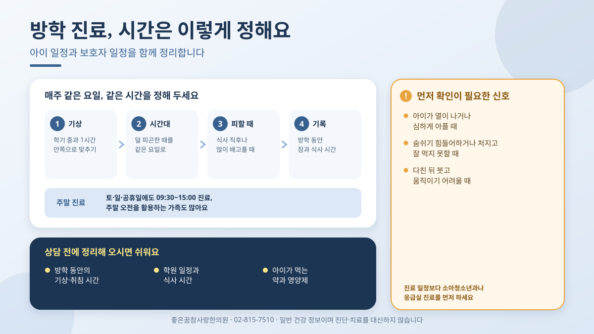

이종호 한의사 감수좋은꿈참사랑한의원 대표원장 (한의사 면허번호 19769)발행 2026-11-23 · 수정 2026-11-26
이 글의 차례
- 왜 하루 리듬을 함께 봐야 하나요
- 방학이 되면 아이의 몸은 어떻게 달라질까요?
- 먼저 이렇게 여쭙니다
- 일상에서 먼저 해 볼 수 있는 것
- 진료 시간대별로 이런 점을 생각해 보세요
- 한의원에서 함께 살필 수 있는 경우
- 초진과 재진은 걸리는 시간이 다릅니다
- 자주 하는 오해
- 아이가 진료를 싫어할 때는 어떻게 하나요?
- 예를 들면 이런 경우입니다
- 방학 생활 리듬, 집에서 이렇게 붙잡아 보세요
- 스스로 점검해 보세요
- 방학 중 진료가 학원과 겹칠 때는
- 이렇게 기록해 오시면 상담이 쉬워집니다
- 아이와 함께 일정을 정하면 무엇이 달라질까요?
- 방학 중 한약을 먹게 된다면 시간은 어떻게 하나요?
- 얼마나 지켜보고, 언제 확인하면 좋을까요
- 형제자매가 함께 다닌다면
- 처음 오시면 이렇게 진행합니다
- 방학이 끝날 무렵에는 무엇을 준비하나요?
- 이런 증상은 먼저 확인이 필요합니다
- 관련 글
방학에 진료를 받는다면 아이가 피곤하지 않은 시간대 중에서 되도록 같은 요일, 같은 시간을 정해 두는 것이 가장 수월합니다. 방학에는 기상 시간과 식사 시간이 흐트러지기 쉬워, 일정을 미리 정해 두지 않으면 방문이 자꾸 밀리기 때문입니다. 좋은꿈참사랑한의원은 토·일·공휴일에도 09:30~15:00에 진료해 주말 오전을 활용하실 수도 있습니다.
왜 하루 리듬을 함께 봐야 하나요
- 방학에는 늦게 자고 늦게 일어나는 날이 이어져 잠과 식욕의 리듬이 흔들리기 쉽습니다.
- 학원과 방과후 일정이 몰린 날에는 아이가 지쳐 진료를 힘들어할 수 있습니다.
- 식사 직후나 배고픈 시간에는 아이가 집중하기 어렵습니다.
- 방학 동안의 생활 변화가 잠, 식욕, 성장기 컨디션의 단서가 되기도 합니다.
방학이 되면 아이의 몸은 어떻게 달라질까요?
학기 중에는 등교 시간이 하루를 붙잡아 주지만, 방학에는 그 기준이 사라집니다. 잠드는 시간이 하루 30분씩만 밀려도 한두 주가 지나면 새벽에 자고 한낮에 일어나는 생활이 되기 쉽습니다.
기상 시간이 밀리면 아침을 거르고 점심과 저녁 사이에 간식이 늘어나기 쉽습니다. 밤늦게 먹고 늦게 자는 흐름이 이어지면 아침에 입맛이 없고, 배변 시간도 들쭉날쭉해지는 아이가 많습니다.
반대로 특강과 학원이 몰려 학기 중보다 더 바쁜 아이도 있습니다. 이 경우에는 오래 앉아 있어 목과 허리가 뻐근하고 눈의 피로와 두통을 말하는 아이도 있어, 방학을 어떻게 보내는지에 따라 살필 점이 달라집니다.
먼저 이렇게 여쭙니다
- 아이가 일어나는 시간과 잠드는 시간은 언제인가요?
- 학원, 방과후 일정과 식사 시간은 어떤가요?
- 보호자가 함께 올 수 있는 요일과 시간은 언제인가요?
- 방학 전과 비교해 잠이나 식욕이 달라졌나요?
일상에서 먼저 해 볼 수 있는 것
- 방학에도 일어나는 시간을 학기 중과 1시간 안쪽으로 맞추기
- 아이가 덜 피곤한 시간대를 골라 같은 요일로 예약하기
- 식사 직후나 많이 배고픈 시간은 피하기
- 방학 동안의 잠과 식사 시간을 간단히 기록하기
진료 시간대별로 이런 점을 생각해 보세요
- 평일 오전(09:30~13:00): 늦잠이 습관이 된 아이에게 기상 시간을 붙잡는 기준이 되어 줄 수 있습니다. 아침을 먹고 오도록 챙겨 주세요.
- 평일 오후(14:00 이후): 오전 특강이 있는 아이에게 맞고, 점심을 먹고 30분쯤 쉬었다가 오면 편합니다.
- 평일 저녁(20:00까지): 보호자 퇴근 뒤 함께 올 수 있지만, 하루 일정이 끝나 아이가 지쳐 있을 수 있습니다.
- 토·일·공휴일(09:30~15:00, 점심시간 없음): 평일에 시간 내기 어려운 보호자와 함께 오기 좋습니다.
저녁 늦게 오실 때 몇 시까지 접수할 수 있는지, 원하는 요일의 원장별 진료 일정은 방문 전 전화(02-815-7510)로 확인해 주세요.
한의원에서 함께 살필 수 있는 경우
- 방학 동안 늦게 자고 늦게 일어나 하루 리듬이 흐트러졌을 때 생활 흐름을 함께 여쭙니다.
- 식욕이나 잠이 불규칙해졌을 때 방학 전과 달라진 점을 살핍니다.
- 성장기 아이의 컨디션이 걱정될 때 잠, 식사, 활동을 함께 봅니다.
좋은꿈참사랑한의원에서는 아이도 모든 분처럼 맥을 먼저 짚고, 보호자와 함께 아이의 생활을 들으며 아이 눈높이에 맞춰 천천히 말씀드립니다. 상태에 맞춰 생활 관리와 한약 상담 등을 정합니다.
초진과 재진은 걸리는 시간이 다릅니다
처음 오는 날에는 기본 정보를 적고, 진맥과 진찰을 하며 보호자와 아이의 이야기를 함께 듣느라 시간이 더 걸릴 수 있습니다. 그래서 첫 방문은 뒤에 학원이나 약속이 붙어 있지 않은 날로 잡아 주시는 것이 좋습니다.
다시 올 때는 지난번 이야기를 이어서 듣기 때문에 첫날보다 짧을 수 있습니다. 처음 정한 요일과 시간이 아이에게 맞지 않으면 언제든 다시 조정하셔도 됩니다.

자주 하는 오해
- 방학이니 아무 때나 오면 된다고 여기기 쉽지만, 요일과 시간이 들쭉날쭉하면 방문이 자꾸 밀리고 지난 이야기를 이어 가기도 어려워집니다.
- 늦잠은 방학이라 당연하다고 넘기기 쉽지만, 기상 시간이 크게 밀리면 식사와 배변 시간까지 함께 흔들리는 경우가 많습니다.
- 주말은 붐빌까 봐 피하는 분도 있는데, 원하는 시간대가 있다면 미리 전화로 예약 가능 여부를 확인해 보세요.
아이가 진료를 싫어할 때는 어떻게 하나요?
방학인데 왜 한의원에 가야 하냐며 싫어하는 아이도 있습니다. 이럴 때는 억지로 데려오기보다, 왜 가는지와 가서 무엇을 하는지를 아이 눈높이에서 미리 이야기해 주세요. 진료실에서도 아이에게 직접 묻고 설명하며 천천히 진행합니다.
침이 무서운 아이라면 그 마음을 미리 말씀해 주세요. 진찰을 거쳐 아이 상태와 마음을 보며 그날 할 것을 보호자와 함께 정합니다. 진료가 끝나면 잘 해냈다고 한마디 건네 주시는 것도 다음 방문을 편하게 만듭니다.

예를 들면 이런 경우입니다
- 예를 들어 방학 특강이 오전에 몰린 중학생이라면, 특강이 끝나고 점심을 먹은 뒤 잠시 쉰 오후 시간을 골라 같은 요일로 예약하는 방법이 있습니다. 평일 점심시간(13:00~14:00)은 피해서 잡아 주세요.
- 예를 들어 맞벌이 가정이라 평일 낮에 보호자가 함께 오기 어렵다면, 토·일·공휴일 09:30~15:00 진료 중 오전을 정해 두거나 평일 저녁(20:00까지) 시간을 활용하는 방법도 있습니다.
- 예를 들어 방학 들어 새벽 늦게 잠들고 한낮에 일어나는 고등학생이라면, 처음부터 이른 오전 예약을 잡기보다 오후 시간으로 시작해 기상 시간을 조금씩 앞당기면서 예약 시간도 함께 당겨 가는 방법을 상의합니다.
방학 생활 리듬, 집에서 이렇게 붙잡아 보세요
기상 시간 하나만 먼저 정해 보세요. 잠드는 시간은 마음대로 되지 않아도 일어나는 시간을 붙잡으면 아침 햇빛을 보고, 아침을 먹고, 저녁에 졸음이 오는 흐름이 차츰 따라오기 쉽습니다.
아침에 일어나면 커튼을 걷고 창가에서 5분쯤 햇빛을 보게 해 주세요. 낮에는 하루 한 번 밖에 나가 걷거나 몸을 움직이는 시간을 만들고, 잠들기 한 시간 전부터는 휴대폰과 게임을 거실에 두고 들어가는 약속을 함께 정해 보세요.
이런 약속은 보호자가 일방적으로 정하기보다 아이와 함께 정할 때 오래 갑니다. 지키기 쉬운 것 한두 가지부터 시작해, 일주일 동안 지켰다면 함께 칭찬해 주세요.
스스로 점검해 보세요
- 방학 뒤 기상 시간이 학기 중보다 2시간 넘게 늦어졌다
- 아침이나 점심을 자주 거른다
- 잠들기 직전까지 휴대폰이나 게임을 한다
- 학원 일정이 요일마다 달라 고정된 빈 시간이 없다
- 보호자가 함께 올 수 있는 요일이 정해져 있지 않다
- 방학 전보다 식욕이나 배변이 달라졌다
두세 가지 이상 해당한다면 예약 시간을 정하기 전에 아이의 일주일 일정을 한 장에 적어 보세요. 빈 시간이 한눈에 보여 같은 요일을 정하기 쉬워집니다.
방학 중 진료가 학원과 겹칠 때는
방학 특강은 주마다 시간이 바뀌는 경우가 많아, 처음 정한 진료 시간이 학원과 겹치기도 합니다. 이럴 때는 그냥 건너뛰기보다 같은 주 안에서 다른 날로 옮기면 상의해 정한 방문 간격을 이어 가기 쉽습니다.
학원 시간표가 나오면 그 주의 빈 시간을 먼저 확인하고, 예약을 바꿔야 하면 알게 된 날 바로 연락 주세요. 미리 알려 주시면 다른 시간을 찾기가 훨씬 수월합니다.
이렇게 기록해 오시면 상담이 쉬워집니다
- 방학 동안의 기상·취침 시간
- 학원 일정과 식사 시간
- 식욕이나 잠이 달라진 시기
- 아이가 먹는 약과 영양제
아이와 함께 일정을 정하면 무엇이 달라질까요?
보호자 혼자 정한 예약 시간은 아이 입장에서 끌려가는 일이 되기 쉽습니다. 아이에게 일주일 일정표를 보여 주고 어느 날이 덜 피곤한지 직접 고르게 하면, 진료를 자기 일로 받아들이는 데 도움이 됩니다.
처음 오는 아이라면 진맥은 손목에 손가락을 얹어 맥을 짚는 것이라고 미리 알려 주시면 덜 긴장할 수 있습니다.
방학 숙제처럼 아이가 직접 잠든 시간과 일어난 시간을 적어 오게 해 보셔도 좋습니다. 진료실에서 아이가 직접 기록을 보여 주면 보호자 이야기만으로는 알기 어려운 부분이 드러나기도 합니다.
방학 중 한약을 먹게 된다면 시간은 어떻게 하나요?
방학에는 끼니 시간이 들쭉날쭉해 한약 복용 시간을 놓치기 쉽습니다. 처방받을 때 들은 복용 안내 안에서, 시계 시각보다 '아침 먹고 나서'처럼 아이의 하루 순서에 붙여 정해 두면 덜 잊습니다.
학원에 오래 있는 날에는 한 봉을 가방에 넣어 가도 되는지 미리 여쭤 주세요. 아이가 맛 때문에 먹기 힘들어하면 억지로 먹이기보다 진료 때 말씀해 주시면 함께 방법을 찾습니다.
먹은 뒤 속이 불편하거나 두드러기 같은 반응이 보이면 복용을 멈추고 전화(02-815-7510)로 알려 주세요.
얼마나 지켜보고, 언제 확인하면 좋을까요
- 방학 첫 주에 늦잠이 늘어나는 정도라면 기상 시간을 하루 15~30분씩 앞당기며 1~2주 지켜보셔도 됩니다.
- 2주 넘게 밤낮이 바뀐 채로 돌아오지 않거나, 낮에 처지고 끼니를 자주 거른다면 생활 리듬을 함께 살펴보는 상담을 받아 보세요.
- 개학이 다가온다면 개학 2주 전쯤부터 기상 시간을 학기 중에 맞춰 가면 첫 주의 부담이 덜할 수 있습니다.
형제자매가 함께 다닌다면
형제자매가 함께 진료를 받는다면 같은 날 이어서 보는 편이 보호자의 부담이 덜합니다. 이어지는 시간으로 잡을 수 있는지는 예약할 때 몇 명이 함께 오는지 말씀하시고 확인해 주세요.
다만 아이마다 걱정되는 점과 하루 리듬이 다를 수 있어, 진료실에서는 한 명씩 따로 맥을 짚고 이야기를 듣습니다. 각자의 잠과 식사 기록을 따로 적어 오시면 상담이 섞이지 않고 깔끔하게 이어집니다.
처음 오시면 이렇게 진행합니다
첫 방문에는 보호자가 접수 때 아이의 기본 정보를 적어 주세요. 진료실에서는 아이도 모든 분처럼 맥을 먼저 짚고, 짚으면서 방학 중 기상·취침 시간과 식사, 학원 일정을 보호자와 아이 본인에게 함께 여쭙습니다.
그다음 오늘 할 수 있는 방법과 집에서 지켜볼 생활 습관을 설명드리고, 방학 일정에 맞춰 다음 방문 요일과 시간을 함께 정합니다.
방학이 끝날 무렵에는 무엇을 준비하나요?
개학 뒤에도 진료를 이어 간다면 시간도 학교 일정에 맞춰 다시 정해야 합니다. 평일 저녁이나 주말 시간으로 옮기는 경우가 많으니, 방학 마지막 진료 때 다음 시간대를 함께 상의해 두시면 편합니다.
방학 동안 적어 온 잠과 식사 기록은 개학 뒤에도 이어서 적어 보세요. 방학과 학기 중의 리듬을 나란히 놓고 보면 아이에게 어떤 생활이 맞는지 보호자와 아이 모두 더 잘 알게 됩니다.
방학은 학기 중에 미뤄 둔 몸의 불편을 차분히 살펴볼 수 있는 시간이기도 합니다. 아이와 보호자 모두에게 무리가 없는 시간을 함께 찾겠습니다.
다음에 오시면 방학 동안 아이가 몇 시에 일어나고 언제 끼니를 먹었는지부터 여쭙겠습니다. 일주일 일정표를 들고 오시면 다음 시간도 그 자리에서 함께 정할 수 있습니다.
이런 증상은 먼저 확인이 필요합니다
- 열이 높거나 숨쉬기 힘들어하는 경우
- 소변이 줄고 축 처지거나 잘 먹지 못하는 경우
이런 신호가 있으면 한의원보다 가까운 병원이나 응급실을 먼저 찾으세요.
관련 글
- 학원이 늦게 끝나 밤 9시 넘어 저녁을 먹는 아이의 소화와 잠은 어떻게 살피나요?
- 침이 무서울 때는 한의원에 어떻게 말하면 되나요?
- 아이가 휴대폰을 보다가 밤늦게 잠들 때는 어떻게 바꿔 갈 수 있을까요?

여쭙는 것
- 아이가 일어나는 시간과 잠드는 시간은 언제인가요?
- 학원, 방과후 일정과 식사 시간은 어떤가요?
- 보호자가 함께 올 수 있는 요일과 시간은 언제인가요?
생활에서 해 볼 것
- 방학에도 일어나는 시간을 학기 중과 1시간 안쪽으로 맞추기
- 아이가 덜 피곤한 시간대를 골라 같은 요일로 예약하기
- 식사 직후나 많이 배고픈 시간은 피하기
한의원에서 함께 살필 것
- 방학 동안 늦게 자고 늦게 일어나 하루 리듬이 흐트러졌을 때 생활 흐름을 함께 여쭙…
- 식욕이나 잠이 불규칙해졌을 때 방학 전과 달라진 점을 살핍니다.
- 성장기 아이의 컨디션이 걱정될 때 잠, 식사, 활동을 함께 봅니다.
먼저 확인이 필요한 신호
- 열이 높거나 숨쉬기 힘들어하는 경우
- 소변이 줄고 축 처지거나 잘 먹지 못하는 경우
한눈에 보는 표
| 구분 | 핵심 |
|---|---|
| 여쭙는 것 | 아이가 일어나는 시간과 잠드는 시간은 언제인가요? 학원, 방과후 일정과 식사 시간은 어떤가요? |
| 생활에서 해 볼 것 | 방학에도 일어나는 시간을 학기 중과 1시간 안쪽으로 맞추기 아이가 덜 피곤한 시간대를 골라 같은 요일로 예약하기 |
| 한의원에서 함께 살필 것 | 방학 동안 늦게 자고 늦게 일어나 하루 리듬이 흐트러졌을 때 생활 흐름을 함께 여쭙니다. 식욕이나 잠이 불규칙해졌을 때 방학 전과 달라진 점을 살핍니다. |
| 먼저 확인이 필요한 신호 | 열이 높거나 숨쉬기 힘들어하는 경우 소변이 줄고 축 처지거나 잘 먹지 못하는 경우 |
자주 묻는 질문
아이 혼자 와도 되나요?
나이와 상태에 따라 다르고, 보호자 동행을 안내하는 경우가 많습니다. 방문 전 전화(02-815-7510)로 확인해 주세요.
방학 동안 꼭 매주 와야 하나요?
방문 간격은 아이의 상태와 일정에 따라 상담으로 정합니다.
학원 때문에 늦은 시간에만 가능한데요.
평일은 20:00까지 진료하므로 예약할 때 가능한 시간대를 알려 주세요.
개학하면 진료 시간을 바꿔도 되나요?
네. 개학 일정이 나오면 학교와 학원 시간에 맞춰 다시 정하시면 됩니다.
좋은꿈참사랑한의원은 재진 때 지난번 이야기부터 이어서 여쭙니다. 진료시간과 예약은 오시는 길에서 확인하세요.
어디서 상담받을 수 있나요?
좋은꿈참사랑한의원은 서울 동작구 만양로2길 2 신성빌딩 3층·5층(서울 동작구 상도동, 7호선 상도역 3번 출구 근처)에 있습니다. 한의사 3명(이종호 대표원장, 조영기 수석진료원장, 정원영 진료원장)이 진료합니다. 진료시간은 평일 09:30~20:00(점심 13:00~14:00), 토·일·공휴일 09:30~15:00이며, 방문 전 전화로 확인을 권합니다. 예약은 네이버 예약, 카카오톡 상담, 전화 02-815-7510로 받습니다.
이 글은 일반적인 건강 정보이며 개인의 진단이나 치료를 대신하지 않습니다. 증상이 있거나 복용 중인 약이 있다면 진료를 통해 확인하세요. 치료 효과는 개인마다 다를 수 있습니다.
작성 기준: 일반적으로 알려져 있는 건강 정보를 참고해 정리했습니다(대표원장 감수). 증상 기록은 1~2주 동안 하루 1회, 비슷한 시간에 적어 오시면 지난 상태와 비교하기 쉽습니다.